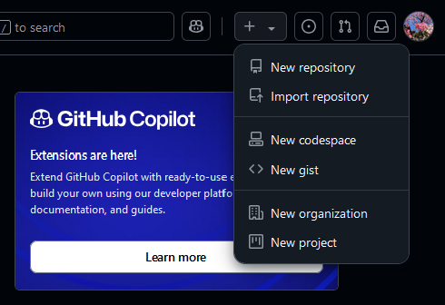
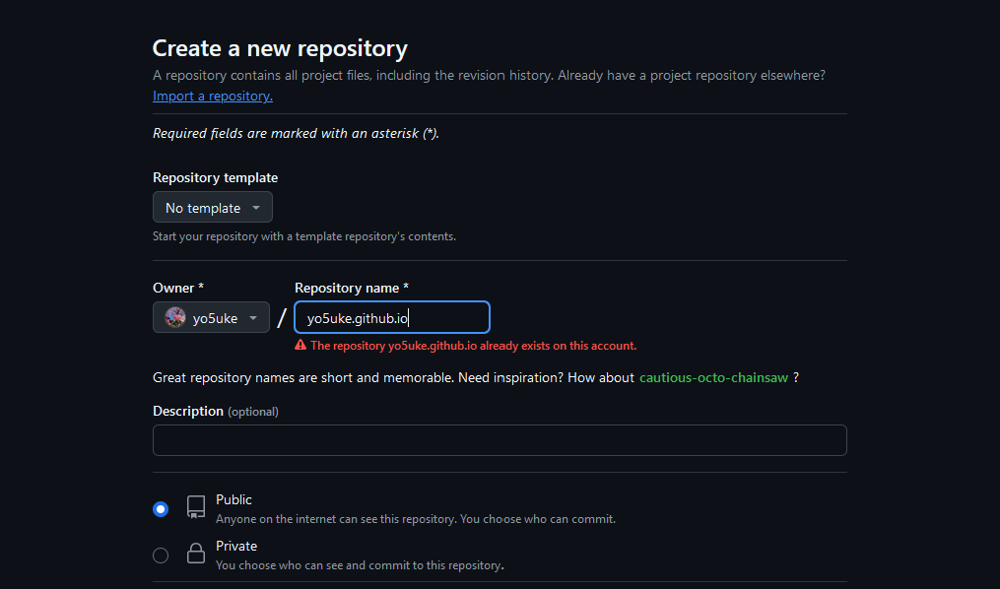
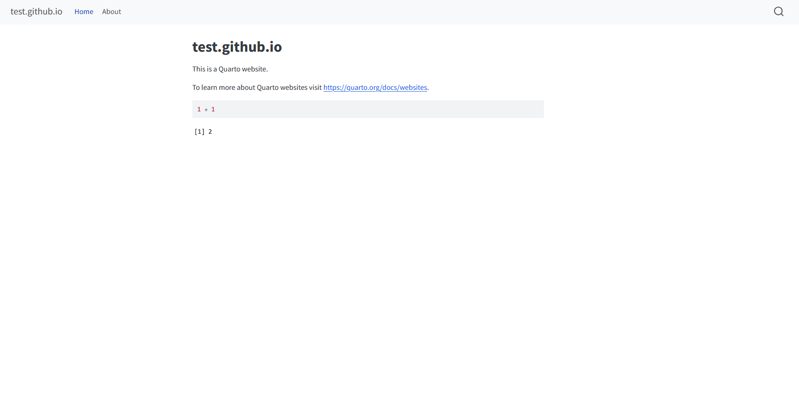
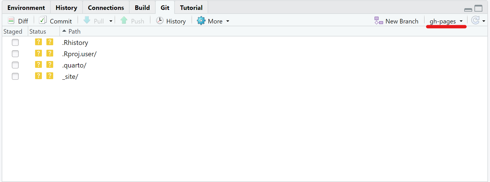
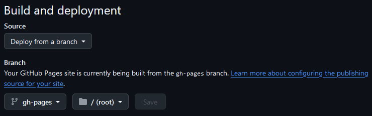

はじめに
個人のホームページを作りたい！しかし何でどうやって作ろうか。
ここではRStudio上で完結する方法をご紹介します。
HTMLなどに関する知識がなくても、多分作れます。僕もありませんので。
早速順を追ってみていきましょう。
手順1：GitHubでレポジトリを作成
前提：GitHubアカウントを所持していること（所持していない場合はhttps://github.com/より作成して下さい）
まず、GitHubホームの右上にあるプラスボタンから、New repositoryをクリックします。

次に出てきた画面で、リポジトリ名を、「ユーザー名.github.io」という風に設定します。例えば僕のユーザー名はyo5ukeなので、yo5uke.github.ioといった感じです。

そしてPublicにチェックが入っていることを確認したら、画面下まで行ってCreate repositoryをクリックします。
一旦ここまでです。
手順2：RStudioでプロジェクトを作成
RStudioを開きます。そしたら画面右上のProject: (None)となっているところをクリックし、New Projectを選択します。
さらにNew Directoryを選択したら、Quarto Websiteがありますので、これを選択して下さい。
ディレクトリ名は何でもよいのですが、GitHubのリポジトリ名と同じにしておけばよいと思います。
その下にあるどこのサブディレクトリに置くかについては、どこでもよいと思いますのでお任せします。特にこだわりがなければC:/Users/ユーザーのところでいいと思います1。
Create a git repositoryにはチェックを入れてください。renvは知っている方でこだわりがあれば使えばよいと思いますが、なんだそれという方はチェックを外したままでよいと思います。
1番下にあるvisual editorは便利だと思います。Quarto公式ガイド（英語ですが）に概要が書いてあるので、いちいちマークダウン記法を覚えるのがだるいなって人は使ってみてください。直感的なので、慣れるのにもそんなに時間はかからないと思います。
必要な項目を選択し終えたらCreate Projectをクリックしてください。
なにやらいろいろなファイルができているはずです。
手順3：GitHubとの連携
一度GitHubに戻ります。画面下部になにやらいろいろコードが書いてあると思います。2つブロックがあると思うのですが、そのうち下のブロックの以下のコードをコピーしてください。
git remote add origin https://github.com/user/user.github.io.git
git branch -M main下のブロックの上2行ということですね。これをコピーできたら、RStudioに戻ります。
Consoleの右にTerminalがあると思うので、開きます。そしたら、そこに先ほどのコードをペーストしてください。
（Macは知らないのですが、）WindowsだとCtrl + Shift + Vでないとペーストできません。Ctrl + Vだと^Vと表示されるだけなので気を付けてください。エンターで実行し、特に問題なくできたら次に移ります。
RStudio上のEnvironmentの4つ右にGitというところがあります。ここを開くと、作られたファイルがずらーっと並んでいます。1番左の列にチェックボックスがあるので、一旦全部にチェックを入れ、その上にあるCommitを押してください。するともう1つウィンドウが出てくるので、その画面右上にあるCommit messageというところに作業内容についてコメントを付けます。別に適当で構いません。最初だったら「Initial commit」とかでいいと思います。
書けたらCommitボタンを押して、コミットできたら×で画面を閉じ、先ほどコピーしてきたコードの下にあったgit push -u origin mainをコピーしてきて再びターミナルにペースト、実行します。
これでGitHub上にプッシュされました。GitHubに戻ってページを再度読み込むと、今プッシュしたファイルがアップされていることがわかります。
ちなみにコミットまでのやり方は毎度同じですが、2回目以降プッシュはコミットメッセージ欄の右上にあったPushボタンでできるようになります。
小休憩
ここまでやればとりあえずウェブサイトを作る土台はできたことになります（公開のためにはまだ準備が必要ですが…）。
試しにindex.qmdを開いてRenderをクリックしてみましょう。
デフォルトの計算のコードが表示されると思いますが、一応ウェブサイトの形にはなっていると思います。

このようになればいい感じです。これをベースに形作っていくことになります。
それでは次の手順に進みます。
手順4：ファイルの中身を整理
.gitignore
今試しにレンダリングしましたが、これを行うと_siteというフォルダが生成されます。これはGitで管理するとファイル数がとんでもないことになるので、.gitignoreファイルを編集し追跡から除外します。
.gitignoreファイルを開き、1番下の行に/_site/と追記します。追記できたら保存して閉じてください2。
_quarto.yml
次に_quarto.ymlファイルを開きます。これはウェブサイトのデザインを設定する、重要なファイルです。
わかりやすいところから設定していきましょう。例えば作成したページの左上に出てくる文字はtitleの部分で変更可能です。また、navbarは画面上部のナビゲーションバーですが、これをleftからrightにすれば、左寄せだったHomeやAboutが右寄せになります。
website:
title: "俺のホームページ"
navbar:
left:
- href: index.qmd
text: Home
- about.qmdちなみに先ほどレンダリングして表示されたブラウザのページを閉じていない場合、変更した_quarto.ymlを保存すれば、自動でそれが反映されます。再度レンダリングする必要はないということです。
とりあえずポイントをまとめます。
title：画面左上に表示されるタイトル
left：ナビゲーションバーの項目を左寄せに
- rightに変更可能。
href：作りたいページのファイルへのパス
- デフォルトではワーキングディレクトリに
about.qmdがあるためシンプルにabout.qmdと書かれているが、例えばpages/about.qmdのようにフォルダに入っている場合はpages/about.qmdと書く必要がある。
- デフォルトではワーキングディレクトリに
text：ナビゲーションバーに表示するテキスト
また、ページ上ではタイトルをクリックすれば自動的にindex.qmdに飛べるため、Homeを作らなくても問題ありません。
僕の2024/12/13現在の設定（一部）は以下のようになっています。
website:
title: "Yosuke Abe"
navbar:
right:
- href: pages/about.qmd
text: About
- href: pages/tips/index.qmd
text: Tips
- href: pages/gis_in_r/index.qmd
text: GIS in {{< fa brands r-project >}}
- href: pages/blog/index.qmd
text: Blog
- href: pages/app/index.qmd
text: App{{< fa brands r-project >}}についてはこちらもご覧ください。
ナビゲーションバーを今設定したので、ここではフッターについても書くことにします。書き方は以下の通りです。
website:
title: "俺のホームページ"
navbar:
left:
- href: index.qmd
text: Home
- about.qmd
page-footer:
center: © 2024 Yosuke Abe
right: This website is created with Quartopage-footerでフッターを追加することができ、left, center, rightをそれぞれ設定可能です。
_quarto.ymlは他にも設定できることはいろいろあるのですが、とりあえずここまでとします。
手順5：ページを作る
いよいよページの作成に入ります。つまり、index.qmdを編集していきます。
index.qmdを開いて下さい。
上部の---で囲まれている部分はYAMLヘッダーと言います。初期ではtitleのみが書かれていると思いますので、とりあえずここに好きなタイトルを入れてください。トップページなので名前が良いと思います。
次にページのレイアウトを決めます。次のように書きます。
---
title: "Yosuke Abe"
about:
template: jolla
image: profile.png
---ここのtemplateの部分がデザインのテンプレートです。また、imageでは使う画像を指定できます。ディレクトリ内に保存しておいてください。
jollaを使うと以下のようなデザインになります。

丸い画像が中心にあり、その下に中央揃えで文章がある形になります。
他には以下のようなものがあります。
trestlessolanamarqueebroadside
それぞれどういうデザインかは、このページでご確認ください。
Aboutページも同様に編集することができ、すべてマークダウン記法で記述できます。
実際どのように書いているのかは誰かのページを見るのが1番勉強になると僕は思っています。
例えば僕のページはここから見れます。まだまだ拙い書き方ですが、参考になれば幸いです。
手順6：ページを追加する
初期段階ではindex.qmdとabout.qmdの2ファイルが用意されていますが、例えば研究者であればResearchページを作りたいと思います。
これは簡単で、RStudioの画面左上![]() よりQuarto Documentを選択、タイトルだけ任意のものに変更してCreateをクリックします。
よりQuarto Documentを選択、タイトルだけ任意のものに変更してCreateをクリックします。
そしたら先ほどと同様にページを編集し、research.qmdなどと名前を付けて保存しておきます。
次に_quarto.ymlを再度開き、
website:
title: "俺のホームページ"
navbar:
left:
- href: index.qmd
text: Home
- about.qmd
- href: research.qmd
text: Research
page-footer:
center: © 2024 Yosuke Abe
right: This website is created with Quartoとして保存、最後にresearch.qmdをレンダリングすればOKです。
必要なページが準備できたら、パブリッシュする準備に入ります。
手順7：新しいブランチを作成
ここからGitHubを利用してページを作成するのですが、そのためにgh-pagesというブランチを作成します。ブランチについての説明は省略しますが、必要な手順です。
まず、RStudioのGit欄からすべての変更をコミットしておいてください。再度確認ですが、
- Stagedのチェック欄にチェックを入れる
- その上のCommitをクリック
- 右上のボックスにコミットメッセージを入れる（何でもよい）
- ボックスの右下のCommitをクリック
- さらにウィンドウが出てくるのでCloseをクリック
- プッシュする
コミットまででいいのですが、別にプッシュまでしてしまってよいと思います。
コミットできたら、コンソール横のターミナルを開き、以下のコマンドを実行していきます。
git checkout --orphan gh-pages
git reset --hard
git commit --allow-empty -m "Initialising gh-pages branch"
git push origin gh-pages最後まで実行できたら、Git欄の右上にgh-pagesとあると思うので、そこをクリックしてmainに戻っておきます。

手順8：GitHub上でパブリッシュの準備
再度GitHubのリポジトリページを開きます。
画面上部にSettingとあるので、クリックします。するとサイドバーの真ん中少し下あたりにPagesがあるので、そこをクリックします。
Build and Deploymentの部分で、以下の画像のように変更します。

変更したらSaveしておいてください。
次はいよいよパブリッシュです。
手順9：コマンドでパブリッシュ
RStudioに戻ります。
再度ターミナルを開き、以下のコマンドを入力、実行してください。
quarto publish gh-pagesY/nが問われますが、無論Yで進めてください。
少し時間がかかりますが、最後まで回り切ったら、ページが公開され、全世界の人が見られるようになります。
とはいっても、最初の方は検索してもヒットしないと思いますが…。
定期的に調べられることが重要なのかもしれません(^^;)
Google Analyticsを使ってアクセス状況を可視化することもできるのですが、これはまた別でまとめたいと思います。
無事公開完了！！
以上、個人のホームページを作る手順をまとめました。
特にGitのところが面倒かもしれませんが、ページを作成するコード自体はマークダウンで書くことができ、難易度もそう高くありません。
普段QuartoやR Markdownを使っている方は馴染みやすいのではないでしょうか。
今回はベーシックな部分に絞って解説しましたが、ゆくゆく応用もアップしたいと思いますので、そちらも参考にしていただければと思います。
それでは！